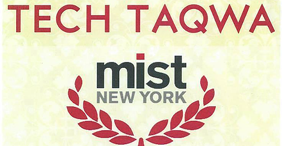

|  |
Welcome to our Mist page!
|
What Is MIST?MIST stands for Muslim Interscholastic Tournament; it was founded in 2002 by Shazia Siddiqi at the University of Houston. It consists of an annual regional tournanment for high school students all throughout the country in: Chicago, Atlanta, Boston, California, New York, Florida, Houston, Toronto, Washington D.C., Detroit... Competitors who win at the regional tournament are able to compete in the National Tournament. Throughout the years MIST has grown to be bigger and better. MIST is a fun, interactive, and educational program that aims to motivate students to work together, be active in their commmunities, tap into their potential, and understand their talents and abilities. It inspires students to be able to express their thoughts about specific topics in society through various means. Students are able to learn how to cooperate with others, how to be leaders, and how to approach a problem with mulitple solutions .MIST teaches the true meaning of a family outside of the home. |